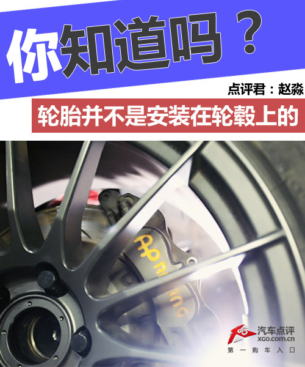

你知道吗？轮胎其实并不是装在轮毂上的

先来说说那个所谓的“轮毂”吧，也就是我们平时能够看到的固定轮胎的配件，满大街的改装店都在喊着“改装17英寸轮毂”、“改装20英寸锻造轮毂”等等，其实，那个什么17英寸、20英寸的东西并不叫做“轮毂”，而是轮辋（轮圈）。

上图为单片轮辋（轮圈）
轮辋的种类有很多，要与车型和轮胎的数据相配合，比如ET值啊、J值和孔距什么的，而在制造工艺方面也有区别，分为铸造和锻造，这些东西我们先不谈，主要还是说说轮辋和轮毂的区别。
而在产品形式上轮辋（轮圈）也有多种形式，比如单片式，双片式和三片式，改装玩家最终都会选择三片式锻造轮辋（轮圈），这样既保证了性能与轻便性，又在改装空间上有了比较大的提升。三片式的轮辋（轮圈）能够根据个人喜好调整样式和参数，比如偏距（ET）值。
三片式轮辋（轮圈）
说完了轮辋，回来说说轮毂吧，它到底是什么呢？轮辋又可以叫做轮圈，但是确实和轮毂是不同的两个概念，在现代汉语词典中查找这两个词的话，你可以看到如下结果：
轮毂：车轮的中心装轴部分
轮辋（轮圈）：车轮周围边缘的部分
其实这么看的话读者可能也不太懂轮毂到底是什么，用一种空间上的逻辑来说就是：轮胎是安装在轮辋（轮圈）上的，而轮辋（轮圈）才是安装在轮毂上的。
正常车上的轮毂还有固定刹车盘等等配件的功能，但更主要的功能还是要固定轮辋，目前比较流行的宽体改装中需要的转距法兰盘其实也可以算作一种轮毂。
转距法兰盘安装在轮毂上
所以，以后千万别再说什么17英寸“轮毂”啦，那是个不正确的说法。